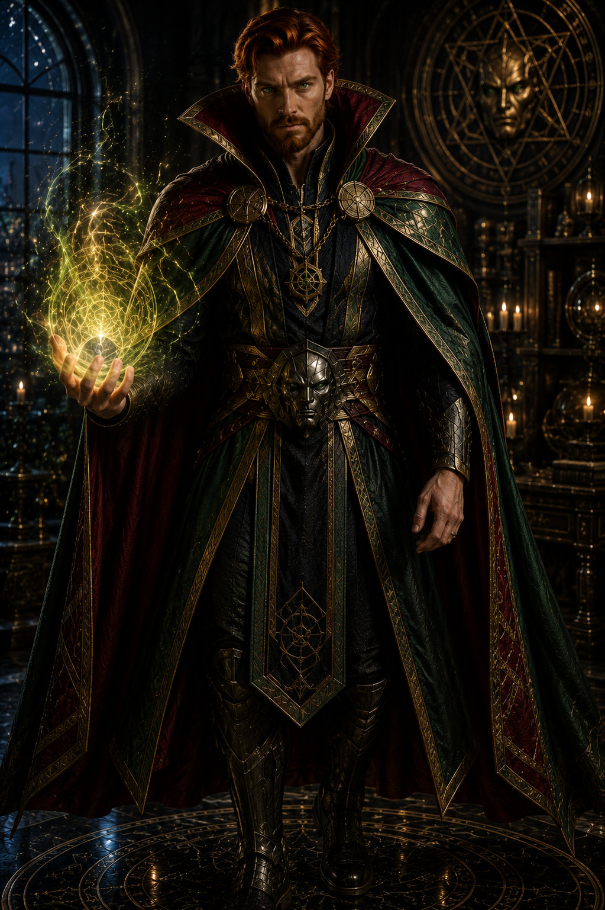
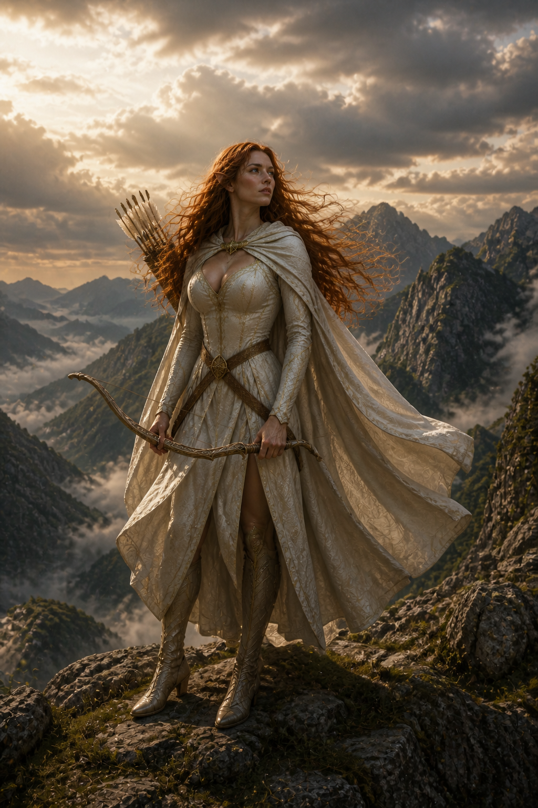
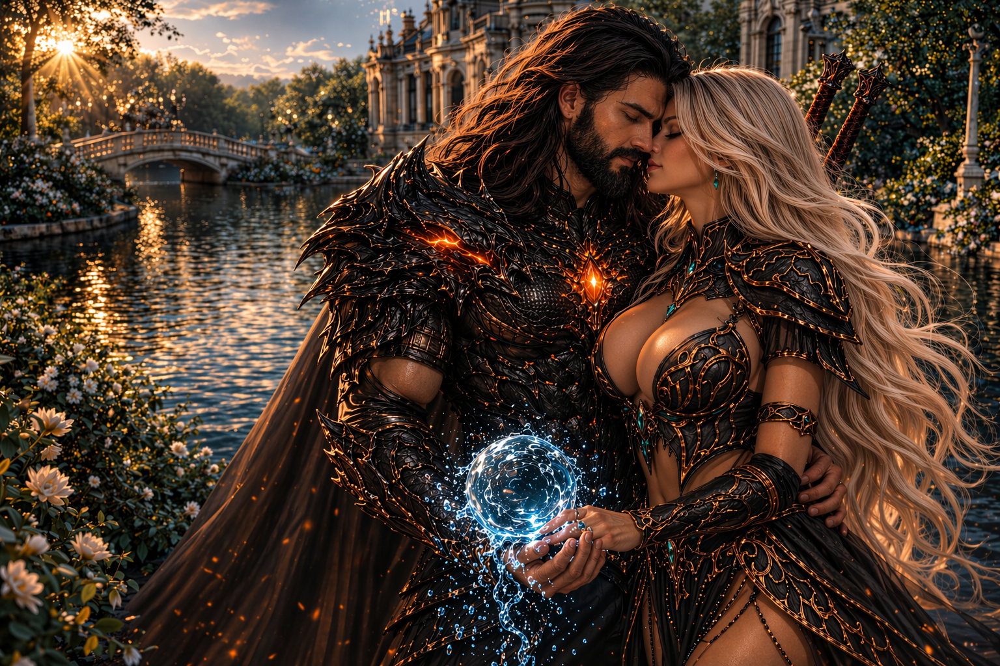

Arquivo dos Destinos
A realidade termina aqui.
Além deste limiar, heróis, deuses e mundos impossíveis escrevem juntos uma única história.

Quando todas as realidades convergem


 Entrar no Arquivo →
Entrar no Arquivo →
Guardiões do DestinoHeróis · Deuses · Realidades


